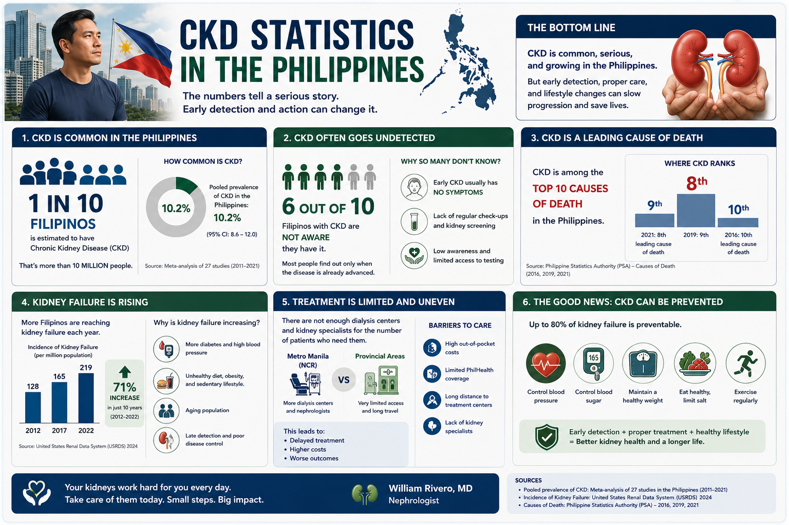
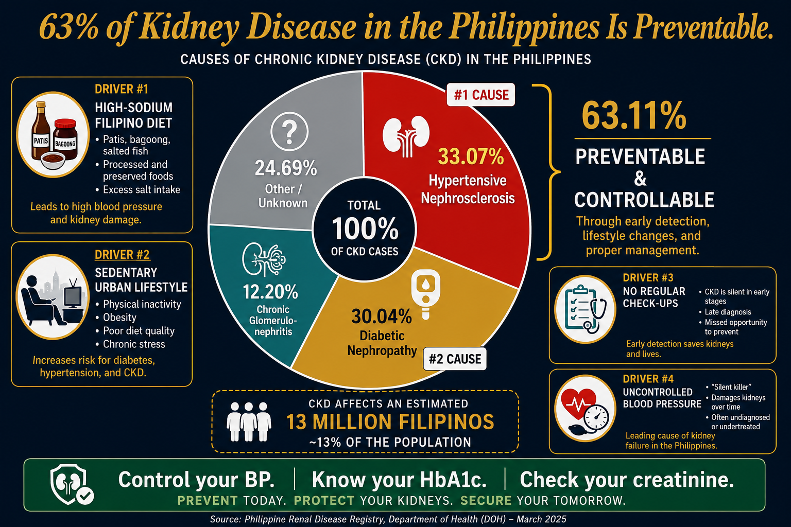
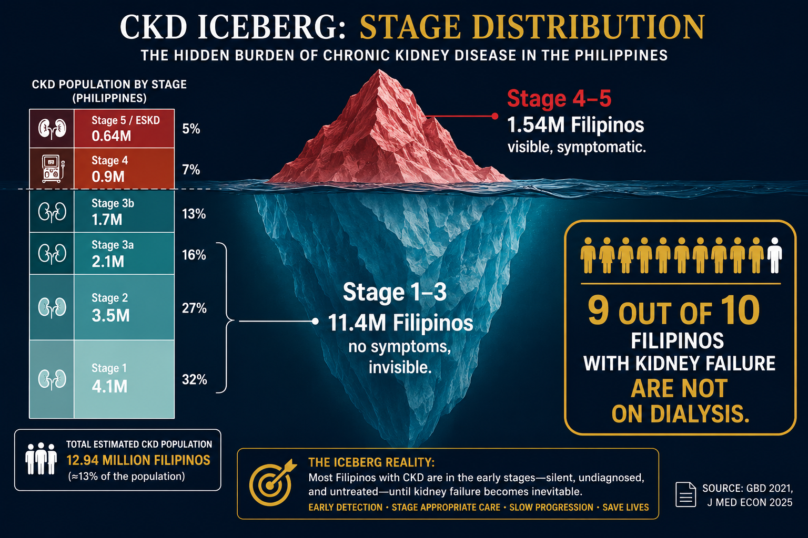
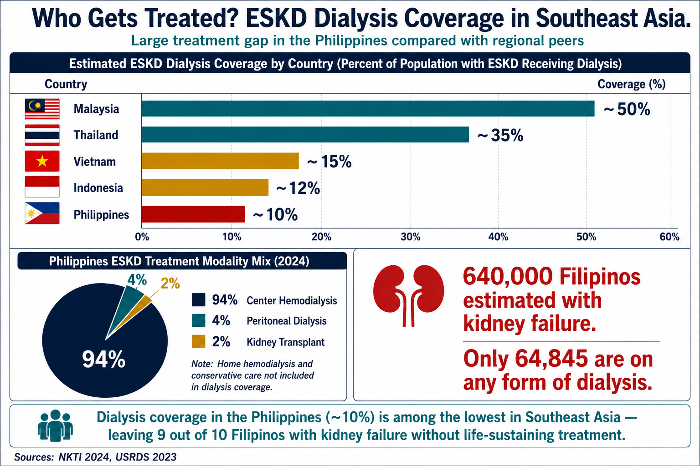
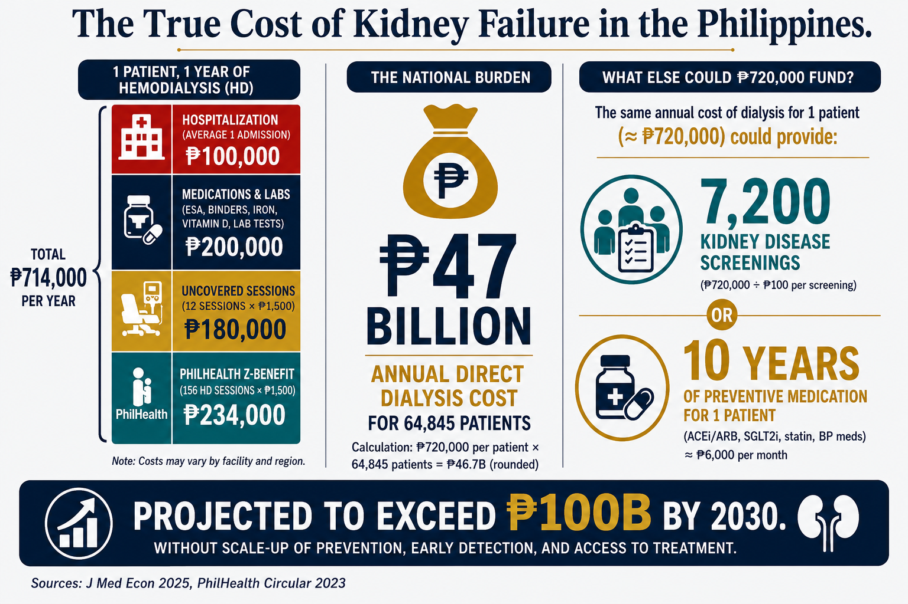

12.94 Million Filipinos Are Living With CKD 12.94 Milyong Pilipino ang Namumuhay na may CKD 12.94 Milyong Pilipino ang Nagpuyo nga adunay CKD 12.94 Milyung Pilipino ing Mamuhay nang maki CKD

One Filipino develops chronic kidney failure every hour. That is approximately 120 people per million population every year — and the numbers are accelerating. A 2025 cost-of-illness analysis published in the Journal of Medical Economics estimated that 12.94 million Filipinos are currently living with various stages of CKD, in a country of 115.6 million people. Isang Pilipino ang nagtatamasa ng talamak na pagpalya ng bato bawat oras. Humigit-kumulang 120 tao bawat milyong populasyon bawat taon — at ang mga bilang ay nagbibilis. Isang pagsusuri ng gastos-ng-sakit na inilathala sa Journal of Medical Economics noong 2025 ay tinantya na 12.94 milyong Pilipino ang kasalukuyang namumuhay sa iba't ibang yugto ng CKD, sa isang bansang may 115.6 milyong tao. Usa ka Pilipino ang nagkuha sa kronikal nga pagpalya sa kidney matag oras. Mga 120 ka tawo matag milyun ka populasyon matag tuig — ug ang mga numero nagkadako. Usa ka pagtuki sa gasto-sa-sakit nga gipatik sa Journal of Medical Economics niadtong 2025 nagtantya nga 12.94 milyun ka Pilipino karon nagpuyo sa lain-laing yugto sa CKD, sa usa ka nasud nga adunay 115.6 milyun ka tawo. Metung a Pilipino ing magkamit ning kronikal a pagpalya ning batu kada oras. Mga 120 tao kada milyun populasyon kada taon — at deng bilang nagbibilis. Metung a pagsusuri ning gastos-ning-sakit a inilathala king Journal of Medical Economics noong 2025 tinantya na 12.94 milyun a Pilipino ing kasalukuyang mamuhay king iba't ibang yugto ning CKD, king metung a bansang maki 115.6 milyun a tao.
CKD Prevalence: Philippines vs Asia vs World Prevalensya ng CKD: Pilipinas vs Asya vs Mundo Prevalensya sa CKD: Pilipinas vs Asya vs Kalibutan Prevalensya ning CKD: Pilipinas vs Asya vs Mundo
Sources: J Med Econ 2025 (Philippines); GBD Study 2021 (global); Kidney Int 2025 review (Asia). Range reflects variation in study methodology and population screened. Mga Sanggunian: J Med Econ 2025 (Pilipinas); GBD Study 2021 (global); Kidney Int 2025 review (Asya). Ang saklaw ay sumasalamin sa pagkakaiba-iba ng pamamaraan ng pag-aaral at populasyong na-screen. Mga Tinubdan: J Med Econ 2025 (Pilipinas); GBD Study 2021 (global); Kidney Int 2025 review (Asya). Deng Sanggunian: J Med Econ 2025 (Pilipinas); GBD Study 2021 (global); Kidney Int 2025 review (Asya).
Leading Causes of Kidney Disease in the Philippines Mga Nangungunang Sanhi ng Sakit sa Bato sa Pilipinas Nanguna nga mga Hinungdan sa Sakit sa Kidney sa Pilipinas Deng Nangungunang Dahilan ning Sakit king Batu king Pilipinas
Philippine Renal Disease Registry (DOH), as of March 2025: Philippine Renal Disease Registry (DOH), hanggang Marso 2025: Philippine Renal Disease Registry (DOH), hangtod Marso 2025: Philippine Renal Disease Registry (DOH), anggang Marso 2025:
| CauseSanhiHinungdanDahilan | % of Cases% ng mga Kaso% sa mga Kaso% ning mga Kaso | What This MeansAno ang Ibig Sabihin NitoUnsa ang Gipasabot NiiniNanung Kahulugan Niti |
|---|---|---|
| Hypertensive Nephrosclerosis | 33.07% | High blood pressure damaging kidney vessels over years — the #1 causeMataas na presyon ng dugo na nagdadamage sa mga daluyan ng bato sa loob ng mga taon — ang #1 na sanhiTaas nga presyon sa dugo nga nagdamage sa mga daluyan sa kidney sulod sa mga tuig — ang #1 nga hinungdanMataas a presyon ning dala a nagdamage king deng daluyan ning batu king loob ning mga taon — ing #1 a dahilan |
| Diabetic Nephropathy | 30.04% | Kidney damage from uncontrolled diabetes — the #2 cause and rising fastPinsala sa bato mula sa hindi nakontrolang diabetes — ang #2 na sanhi at mabilis na tumataasKadaot sa kidney gikan sa dili makontrol nga diabetes — ang #2 nga hinungdan ug paspas nga motuboPinsala king batu mula king hindi makontrol a diabetes — ing #2 a dahilan at mabilis a tumataas |
| Chronic Glomerulonephritis | 12.20% | Immune-mediated kidney inflammation — more common in younger patientsPamamaga ng bato na dulot ng immune system — mas karaniwan sa mga mas batang pasyentePamamaga sa kidney nga gibuhat sa immune system — mas kasagaran sa mas batan-on nga mga pasyentePamamaga ning batu mula king immune system — mas karaniwan king mas matanda a mga pasyente |
| Other / UnknownIba pa / Hindi KilalaUban pa / Wala MahibaloiIba pa / Hindi Kilala | 24.69% | Includes IgA nephropathy, lupus, polycystic, obstruction, othersKabilang ang IgA nephropathy, lupus, polycystic, obstruction, at iba paNaglakip sa IgA nephropathy, lupus, polycystic, obstruction, ug uban paKasama ing IgA nephropathy, lupus, polycystic, obstruction, at iba pa |

Together, hypertension and diabetes account for over 63% of all kidney disease in the PhilippinesMagkasama, ang hypertension at diabetes ay sumasaklaw sa mahigit 63% ng lahat ng sakit sa bato sa PilipinasMagkauban, ang hypertension ug diabetes naglangkob sa labaw sa 63% sa tanan nga sakit sa kidney sa PilipinasMagkasamang, ing hypertension at diabetes sumasaklaw king mahigit 63% ning sablang sakit king batu king Pilipinas
Both are preventable. Both are controllable. This is why early screening, blood pressure control, and blood sugar management matter so much — they directly prevent the two biggest causes of kidney failure in this country.Ang dalawa ay mapipigilan. Ang dalawa ay makokontrol. Kaya naman napakahalaga ng maagang pagsusuri, kontrol ng presyon ng dugo, at pamamahala ng asukal sa dugo — direkta nilang pinipigilan ang dalawang pinakamalaking sanhi ng pagpalya ng bato sa bansang ito.Ang duha malikayan. Ang duha makontrol. Mao kining hinungdan ngano nga importante kaayo ang sayo nga pagsusuri, kontrol sa presyon sa dugo, ug pagdumala sa asukal sa dugo — direkta nilang gipugngan ang duha ka pinakadako nga hinungdan sa pagpalya sa kidney niining nasud.Ing adua mapipigilan. Ing adua makokontrol. Kaya naman napakahalaga ning maagang pagsusuri, kontrol ning presyon ning dala, at pamamahala ning asukal king dala — direkta nang pinipigilan deng adwang pinakamalaking dahilan ning pagpalya ning batu king bansang iti.
Where Are Those 12.94 Million? — CKD by Stage Nasaan ang 12.94 Milyong Iyon? — CKD ayon sa Yugto Asa Man ang 12.94 Milyon? — CKD sumala sa Yugto Nukarin Deng 12.94 Milyun? — CKD ayon sa Yugto
Not all CKD is the same. KDIGO (Kidney Disease: Improving Global Outcomes) classifies CKD into five stages based on eGFR (estimated glomerular filtration rate) and the degree of proteinuria. The critical insight: the overwhelming majority of Filipinos with CKD are in early stages with no symptoms whatsoever — and most do not know they are sick. Hindi lahat ng CKD ay pareho. Inuuri ng KDIGO ang CKD sa limang yugto batay sa eGFR at antas ng proteinuria. Ang kritikal na pag-unawa: karamihan ng mga Pilipino na may CKD ay nasa maagang yugto na walang sintomas — at karamihan ay hindi alam na may sakit sila. Dili tanan nga CKD pareho. Gihinloan sa KDIGO ang CKD sa lima ka yugto base sa eGFR ug ang grado sa proteinuria. Ang kritikal nga pagsabut: kadaghanan sa mga Pilipino nga adunay CKD anaa sa sayo nga mga yugto nga walay sintomas — ug kadaghanan wala nahibalo nga adunay sakit sila. Hindi lahat ning CKD pareho. Ini-uri ning KDIGO ing CKD king limang yugto base king eGFR at antas ning proteinuria. Ing kritikal a pag-unawa: karamihan ning deng Pilipino a maki CKD nasa maagang yugto a walang sintomas — at karamihan hindi alam na maki sakit la.

| CKD StageYugto ng CKDYugto sa CKDYugto ning CKD | eGFR (mL/min/1.73m²) | Est. FilipinosTinantyang PilipinoGibanabana nga PilipinoTinantyang Pilipino | Typical SymptomsKaraniwang SintomasKasagarang SintomasKaraniwang Sintomas |
|---|---|---|---|
| Stage 1Yugto 1Yugto 1Yugto 1 | ≥90 (+ damage markers) | ~4.1M (32%) | None — detected only via urine protein or imagingWala — natukoy sa pamamagitan ng urine protein o imagingWala — mahibaloan pinaagi sa urine protein o imagingWala — matukoy sa pamamagitan ning urine protein o imaging |
| Stage 2Yugto 2Yugto 2Yugto 2 | 60–89 | ~3.5M (27%) | None — often found incidentally on routine blood testsWala — madalas nakita nang hindi sinasadya sa mga pagsusuri ng dugoWala — kasagaran nakit-an aksidente sa mga pagsusuri sa dugoWala — madalas natukoy nang hindi sinasadya king deng pagsusuri ning dala |
| Stage 3aYugto 3aYugto 3aYugto 3a | 45–59 | ~2.1M (16%) | Mild fatigue, nocturia, early anemia — still often dismissedBanayad na pagod, nocturia, maagang anemya — madalas pa ring hindi pinapansinGamay nga pagod, nocturia, sayo nga anemya — sagad gipabayaan pa gihaponBanayad a pagod, nocturia, maagang anemya — madalas pa ring hindi pinapansin |
| Stage 3bYugto 3bYugto 3bYugto 3b | 30–44 | ~1.7M (13%) | Edema, anemia, mineral-bone disease begins; cardiovascular risk peaksEdema, anemya, nagsisimulang mineral-bone disease; pinakamataas na cardiovascular riskEdema, anemya, nagsugod nga mineral-bone disease; pinakataas nga cardiovascular riskEdema, anemya, nagsisimulang mineral-bone disease; pinakamataas a cardiovascular risk |
| Stage 4Yugto 4Yugto 4Yugto 4 | 15–29 | ~0.9M (7%) | Significant uremia symptoms, severe anemia, electrolyte problems — urgent referral neededMakabuluhang sintomas ng uremia, malubhang anemya, mga problema sa electrolyte — kailangan ng agarang referralMakasabot nga sintomas sa uremia, grabe nga anemya, mga problema sa electrolyte — kinahanglan agarang referralMakabuluhang sintomas ning uremia, malubhang anemya, deng problema king electrolyte — kailangan agad a referral |
| Stage 5 / ESKDYugto 5 / ESKDYugto 5 / ESKDYugto 5 / ESKD | <15 (or on dialysis) | ~0.64M (5%) | Severe uremia, fluid overload — requires dialysis or transplant to surviveMalubhang uremia, sobrang likido — nangangailangan ng dialysis o transplant para mabuhayGrabe nga uremia, sobrang likido — nanginahanglan og dialysis o transplant aron mabuhiMalubhang uremia, sobrang likido — nangangailangan ning dialysis o transplant para mabuhay |
Stage estimates derived from the 12.94M total (J Med Econ 2025) using GBD 2021 and ISN Global Kidney Health Atlas stage-distribution proportions applied to the Philippine population. A nationally representative Philippine stage-distribution study has not been published. Ang mga tantya ng yugto ay nagmula sa kabuuang 12.94M (J Med Econ 2025) gamit ang mga proporsyon ng distribusyon ng yugto ng GBD 2021 at ISN Global Kidney Health Atlas na inilapat sa populasyong Pilipino. Ang mga tantya sa yugto nakuha gikan sa kinatibuk-ang 12.94M (J Med Econ 2025) gamit ang mga proporsyon sa distribusyon sa yugto sa GBD 2021 ug ISN Global Kidney Health Atlas. Deng tantya ning yugto nagmula king kabuuang 12.94M (J Med Econ 2025) gamit deng proporsyon ning distribusyon ning yugto ning GBD 2021 at ISN Global Kidney Health Atlas.
The Treatment Gap: Only 1 in 10 Filipinos with Kidney Failure Is on DialysisAng Agwat sa Paggamot: 1 sa 10 Pilipino na may Kidney Failure Lamang ang nasa DialysisAng Gintang sa Pagtambal: 1 sa 10 Pilipino nga adunay Kidney Failure lamang ang naa sa DialysisIng Agwat king Paggamot: 1 sa 10 Pilipino a maki Kidney Failure Lamang ing nasa Dialysis
An estimated 640,000+ Filipinos have Stage 5 CKD (ESKD) — yet only 64,845 are currently on dialysis. Approximately 9 out of 10 Filipinos with kidney failure are either undiagnosed, not referred, or unable to access or afford treatment. This treatment gap reflects the combined challenge of late detection, geographic barriers, and catastrophic cost. Cross-referencing the GBD 2021 data with the NKTI registry: the Philippines' dialysis coverage rate (~10%) is far below high-income nations (>90%) and even below regional peers like Thailand (~35%) and Malaysia (~50%).Tinatayang 640,000+ Pilipino ang may Stage 5 CKD (ESKD) — ngunit 64,845 lamang ang kasalukuyang nasa dialysis. Halos 9 sa 10 Pilipino na may kidney failure ay hindi nadiagnose, hindi nairu-refer, o hindi maka-access o makakayanan ang paggamot. Ang rate ng dialysis coverage ng Pilipinas (~10%) ay malayo sa mga bansang may mataas na kita (>90%) at maging mas mababa kaysa sa mga katulad na bansa sa rehiyon tulad ng Thailand (~35%) at Malaysia (~50%).Gibanabana nga 640,000+ Pilipino adunay Stage 5 CKD (ESKD) — apan 64,845 lamang ang karon naa sa dialysis. Mga 9 sa 10 Pilipino nga adunay kidney failure wala madiagnose, wala maireferir, o dili makaabot o makabayad sa pagtambal. Ang rate sa dialysis coverage sa Pilipinas (~10%) layo sa mga nasud nga adunay taas nga kita (>90%) ug ubos pa kaysa sa mga pareho sa rehiyon sama sa Thailand (~35%) ug Malaysia (~50%).Tinatayang 640,000+ Pilipino maki Stage 5 CKD (ESKD) — ngunit 64,845 lamang ing kasalukuyang nasa dialysis. Halos 9 sa 10 Pilipino a maki kidney failure hindi nadiagnose, hindi nairu-refer, o hindi maka-access o makakayanan ing paggamot. Ing rate ning dialysis coverage ning Pilipinas (~10%) malayo sa deng bansang maki mataas a kita (>90%) at mas mababa pa kaysa king deng katulad a bansa king rehiyon tulad ning Thailand (~35%) at Malaysia (~50%).
The Iceberg PrincipleAng Prinsipyo ng IcebergAng Prinsipyo sa IcebergIng Prinsipyo ning Iceberg
Stages 1–3 (roughly 7.8 million Filipinos) are nearly invisible — no pain, no warning, nothing to feel. This is the "below-waterline" portion of the iceberg. By the time symptoms appear in Stage 3b–4, significant irreversible damage has already occurred. The only way to find early CKD is to specifically test for it with creatinine and urine protein.Ang mga Stage 1–3 (humigit-kumulang 7.8 milyong Pilipino) ay halos hindi nakikita — walang sakit, walang babala. Ang tanging paraan upang mahanap ang maagang CKD ay ang partikular na pagsubok sa pamamagitan ng creatinine at urine protein.Ang mga Stage 1–3 (mga 7.8 milyong Pilipino) halos dili makita — walay sakit, walay babala. Ang bugtong paagi aron makit-an ang sayo nga CKD mao ang partikular nga pagsusi pinaagi sa creatinine ug urine protein.Deng Stage 1–3 (mga 7.8 milyun a Pilipino) halos hindi makita — walang sakit, walang babala. Ing tanging paraan para mahanap ing maagang CKD magparang partikular a pagsubok sa creatinine at urine protein.
Stage 3: The Critical Turning PointStage 3: Ang Kritikal na PagbabagoStage 3: Ang Kritikal nga PagbabagoStage 3: Ing Kritikal a Pagbabago
Stage 3 CKD (eGFR 30–59, ~3.8M Filipinos) is where anemia, mineral-bone disease, and cardiovascular complications begin to emerge — and where nephrology care makes the most impact on slowing progression. Yet most Stage 3 patients in the Philippines have never seen a nephrologist. Identifying and treating these patients is the single most impactful intervention point in the country's CKD burden.Ang Stage 3 CKD (eGFR 30–59, ~3.8M Pilipino) ay kung saan nagsisimulang lumabas ang anemya, mineral-bone disease, at cardiovascular na komplikasyon — at kung saan ang nephrology care ay may pinakamalaking epekto. Gayunpaman, karamihan sa mga pasyente ng Stage 3 sa Pilipinas ay hindi pa nakakakita ng nephrologist.Ang Stage 3 CKD (eGFR 30–59, ~3.8M Pilipino) mao ang diin nagsugod motunga ang anemya, mineral-bone disease, ug cardiovascular nga mga komplikasyon — ug diin ang nephrology care adunay pinakadako nga epekto. Apan kadaghanan sa mga pasyente sa Stage 3 sa Pilipinas wala pa makakita og nephrologist.Ing Stage 3 CKD (eGFR 30–59, ~3.8M Pilipino) keti nagsisimulang lumabas ing anemya, mineral-bone disease, at cardiovascular a deng komplikasyon — at keti ing nephrology care maki pinakamalakas a epekto. Ngunit karamihan ning deng pasyente ning Stage 3 king Pilipinas hindi pa nakakita ning nephrologist.
Death Before DialysisKamatayan Bago ang DialysisKamatayon Bago ang DialysisKamatayan Bago ing Dialysis
Globally, the majority of patients diagnosed with Stage 3–4 CKD never reach dialysis — they die of cardiovascular disease first. CKD multiplies the risk of heart attack and stroke 2–10× depending on stage. This means CKD-related deaths are systematically undercounted in Philippine mortality statistics — many are recorded as "cardiac arrest" or "stroke" without noting the underlying kidney disease driving the event.Sa buong mundo, karamihan ng mga pasyente na may Stage 3–4 CKD ay hindi kailanman nakakarating sa dialysis — namamatay sila muna sa cardiovascular disease. Ang CKD ay nagpapalaki ng risk ng atake sa puso at stroke ng 2–10× depende sa yugto. Ibig sabihin, ang mga pagkamatay na may kaugnayan sa CKD ay sistematikong hindi nabilang sa mga istatistika ng mortalidad sa Pilipinas.Sa tibuok kalibutan, kadaghanan sa mga pasyente nga adunay Stage 3–4 CKD dili moabot sa dialysis — namatay una sila sa cardiovascular disease. Ang CKD nagpadaghan sa risk sa atake sa kasingkasing ug stroke og 2–10× depende sa yugto. Nagpasabot kana nga ang mga pagkamatay nga may kalabotan sa CKD sistematikong dili mabilang sa mga estadistika sa mortalidad sa Pilipinas.King buong mundo, ing karamihan ning deng pasyente a maki Stage 3–4 CKD hindi kailanman nakakarating king dialysis — namatay la muna ning cardiovascular disease. Ing CKD nagpapalaki ning risk ning atake king puso at stroke ning 2–10× depende king yugto. Ibig sabihin, deng pagkamatay a may kaugnayan king CKD sistematikong hindi nabilang king deng istatistika ning mortalidad king Pilipinas.
Who Is Getting Sick — and It's Getting Younger Sino ang Nagkakasakit — at Nagiging Mas Bata Kinsa ang Nagmasakit — ug Nagkabatan-on Sino ing Nagkakasakit — at Nagiging Mas Bata
Data from the Philippine Renal Disease Registry and NKTI (2024–2025) reveal a troubling demographic shift: young adult Filipinos have now overtaken senior citizens as the majority of CKD patients. Ang data mula sa Philippine Renal Disease Registry at NKTI (2024–2025) ay nagpapakita ng isang nakababahalang pagbabago sa demograpiko: ang mga batang adult na Pilipino ay nalampasan na ang mga matatanda bilang karamihan ng mga pasyente ng CKD. Ang datos gikan sa Philippine Renal Disease Registry ug NKTI (2024–2025) nagpakita sa usa ka makapabalaka nga pagbag-o sa demograpiko: ang mga batan-on nga adult nga Pilipino nalabaw na sa mga tigulang isip ang karamihan sa mga pasyente sa CKD. Ing datos mula king Philippine Renal Disease Registry at NKTI (2024–2025) nagpapakita ning metung a nakababahalang pagbabago king demograpiko: deng batang adult a Pilipino nalampasan na deng matatanda bilang karamihan ning deng pasyente ning CKD.
Gender SplitHatian ng KasarianPagbahinbahin sa KasarianHatian ning Kasarian
56.34% male, 43.65% female — men are more frequently diagnosed with kidney stones and other kidney diseases in the Philippines.56.34% lalaki, 43.65% babae — ang mga lalaki ay mas madalas na dini-diagnose ng kidney stones at iba pang sakit sa bato sa Pilipinas.56.34% lalaki, 43.65% babaye — ang mga lalaki mas sagad nga diniagnose sa kidney stones ug uban pa nga sakit sa kidney sa Pilipinas.56.34% lalaki, 43.65% babai — deng lalaki mas madalas a dini-diagnose ning kidney stones at iba pang sakit king batu king Pilipinas.
The Youngest PatientsAng Pinakabatang mga PasyenteAng Pinakabatan-on nga mga PasyenteDeng Pinakabatang Pasyente
Children aged 10 and below: 1.11%. Teenagers (11–19): 0.62%. Though small percentages, these numbers are growing — pediatric CKD cases jumped 109% in a single year (144→301 cases, 2023 to 2024).Mga batang 10 taong gulang pababa: 1.11%. Mga tinedyer (11–19): 0.62%. Bagaman maliit na porsyento, ang mga numerong ito ay lumalaki — ang mga kaso ng pediatric CKD ay tumaas ng 109% sa isang taon.Mga bata nga 10 ka tuig ug ubos: 1.11%. Mga tin-edyer (11–19): 0.62%. Bisag gamay nga porsyento, kining mga numero nagkadako — ang mga kaso sa pediatric CKD mitaas og 109% sa usa ka tuig.Deng anak a 10 taung gulang at mas bata: 1.11%. Deng tinedyer (11–19): 0.62%. Bagaman maliit a porsyento, dening mga bilang lumalaki — deng kaso ning pediatric CKD tumaas ng 109% king metung a taon.
Why Young Filipinos?Bakit ang mga Batang Pilipino?Ngano ang mga Batan-on nga Pilipino?Bakit Deng Batang Pilipino?
Experts point to the rise in processed food consumption, high-sodium diets, sugary beverages, sedentary lifestyles, and undetected hypertension and diabetes in younger age groups — conditions that silently damage kidneys for years before symptoms appear.Ang mga eksperto ay tumuturo sa pagtaas ng pagkonsumo ng processed food, mataas na sodium na diyeta, matamis na inumin, sedentary na pamumuhay, at hindi natukoy na hypertension at diabetes sa mas batang grupo ng edad.Ang mga eksperto nagtudlo sa pagtaas sa pagkonsumo sa processed food, taas nga sodium nga pagkaon, tam-is nga mga ilimnon, sedentary nga kinabuhi, ug dili mahibaloan nga hypertension ug diabetes sa mas batan-on nga grupo sa edad.Deng eksperto nagtuturo king pagtaas ning pagkonsumo ning processed food, mataas a sodium a pagkain, matamis a mga inumin, sedentary a pamumuhay, at hindi natukoy a hypertension at diabetes king mas batang grupo ning edad.
The Dialysis Crisis: 22% Jump in One Year Ang Krisis sa Dialysis: 22% na Pagtaas sa Isang Taon Ang Krisis sa Dialysis: 22% nga Pagtaas sa Usa ka Tuig Ing Krisis king Dialysis: 22% a Pagtaas king Metung a Taon
The number of Filipinos on dialysis reached 64,845 in 2024 — a 22% increase from 53,296 in 2023. This is one of the fastest growth rates in the region and reflects both the rising burden of CKD and improving (though still inadequate) access to renal replacement therapy. Ang bilang ng mga Pilipino sa dialysis ay umabot sa 64,845 noong 2024 — isang 22% na pagtaas mula sa 53,296 noong 2023. Ito ay isa sa pinakamabilis na rate ng paglaki sa rehiyon. Ang gidaghanon sa mga Pilipino sa dialysis miabbot sa 64,845 niadtong 2024 — usa ka 22% nga pagtaas gikan sa 53,296 niadtong 2023. Kini usa sa pinakadali nga rate sa pagtubo sa rehiyon. Ing bilang ning deng Pilipino king dialysis umabot king 64,845 noong 2024 — metung a 22% a pagtaas mula king 53,296 noong 2023. Iti metung sa pinakamabilis a rate ning paglaki king rehiyon.
How Filipinos with ESKD Are Treated Paano Ginagamot ang mga Pilipino na may ESKD Giunsa Pagtratar ang mga Pilipino nga adunay ESKD Panung Ginagamot Deng Pilipino a maki ESKD

Why only 2% receive a transplant?Bakit 2% lamang ang nakakatanggap ng transplant?Ngano 2% ra ang nakadawat sa transplant?Bakit 2% lamang ing nakatanggap ning transplant?
Kidney transplantation is the best long-term treatment for ESKD, offering better survival and quality of life than dialysis. But in the Philippines, transplant rates remain critically low due to: very low organ donation rates, high upfront cost, limited transplant centers, and the need for long-term immunosuppression. Addressing this gap is a national priority.Ang kidney transplantation ang pinakamabuting pangmatagalang paggamot para sa ESKD. Sa Pilipinas, ang mga rate ng transplant ay nananatiling napakababa dahil sa: napakababang rate ng organ donation, mataas na paunang gastos, limitadong mga transplant center, at pangangailangan para sa pangmatagalang immunosuppression.Ang kidney transplantation ang pinakamaayo nga pangtagal nga pagtambal alang sa ESKD. Sa Pilipinas, ang mga rate sa transplant nagpabilin nga kritikal ka ubos tungod sa: kaayo ka ubos nga rate sa organ donation, taas nga gasto sa una, limitado nga mga transplant center, ug panginahanglan sa taas nga immunosuppression.Ing kidney transplantation ing pinakamabuting pangmatagalang paggamot para king ESKD. King Pilipinas, deng rate ning transplant nananatiling kritikalmenteng mababa dahil king: napakababang rate ning organ donation, mataas a paunang gastos, limitadong deng transplant center, at pangangailangan para king pangmatagalang immunosuppression.
The Hidden Billions: Economic Burden of CKD in the Philippines Ang Nakatagong mga Bilyon: Ekonomikong Pasanin ng CKD sa Pilipinas Ang Tinago nga mga Bilyon: Ekonomikong Palas-anon sa CKD sa Pilipinas Deng Nakatagong Bilyun: Ekonomikong Pasanin ning CKD king Pilipinas
A 2025 cost-of-illness analysis published in the Journal of Medical Economics is the first comprehensive estimate of the total economic burden of CKD in the Philippines. The findings are stark: CKD imposes a financial toll measured in tens of billions of pesos annually — making it one of the most expensive disease categories in the country, comparable to cancer and exceeding tuberculosis by an order of magnitude. Ang isang pagsusuri ng gastos-ng-sakit na inilathala sa Journal of Medical Economics noong 2025 ang unang komprehensibong pagtatantya ng kabuuang ekonomikong pasanin ng CKD sa Pilipinas. Ang mga natuklasan ay malinaw: ang CKD ay nagpapataw ng pinansyal na pasanin na sinusukat sa sampu ng bilyun-bilyong piso bawat taon. Ang usa ka pagtuki sa gastos-sa-sakit nga gipatik sa Journal of Medical Economics niadtong 2025 ang una nga komprehensibong tantya sa kinatibuk-ang ekonomikong palas-anon sa CKD sa Pilipinas. Ang mga natuklasan klaro: ang CKD nagpataw og pinansyal nga palas-anon nga gisukat sa dose ka bilyon ka piso matag tuig. Metung a pagsusuri ning gastos-ning-sakit a inilathala king Journal of Medical Economics noong 2025 ing unang komprehensibong tantya ning kabuuang ekonomikong pasanin ning CKD king Pilipinas. Deng natuklasan malinaw: ing CKD nagpapataw ning pinansyal a pasanin a sinusukat king sampung bilyun-bilyun a piso kada taon.

₱100B by 2030. Same cost funds 7,200 kidney screenings." style="width:100%;height:auto;display:block;border-radius:14px;box-shadow:0 4px 20px rgba(0,0,0,.1);">PhilHealth Coverage: A Foundation With a Large Gap Saklaw ng PhilHealth: Isang Pundasyon na May Malaking Agwat Saklaw sa PhilHealth: Usa ka Pundasyon nga Adunay Dako nga Gintang Saklaw ning PhilHealth: Metung a Pundasyon a Maki Malaking Agwat
What PhilHealth Covers (Z-Benefit, HD)Ano ang Sinasaklaw ng PhilHealth (Z-Benefit, HD)Unsa ang Gisabot sa PhilHealth (Z-Benefit, HD)Ano ing Sinasasaklaw ning PhilHealth (Z-Benefit, HD)
PhilHealth's Z-benefit package covers 90 hemodialysis sessions per year at ~₱2,600/session = up to ₱234,000/year. However, standard HD requires 3 sessions per week (156 sessions/year), leaving 66 uncovered sessions annually — a structural shortfall built into the benefit. EPO injections for anemia, phosphate binders, vitamin D analogs, and antihypertensives add ₱80,000–200,000/year more in expenses that PhilHealth covers only partially. Ang Z-benefit package ng PhilHealth ay sumasaklaw sa 90 sesyon ng hemodialysis bawat taon sa ~₱2,600/sesyon = hanggang ₱234,000/taon. Gayunpaman, ang karaniwang HD ay nangangailangan ng 3 sesyon bawat linggo (156 sesyon/taon), na nag-iiwan ng 66 walang saklawang sesyon bawat taon. Ang Z-benefit package sa PhilHealth naglangkob sa 90 ka sesyon sa hemodialysis matag tuig sa ~₱2,600/sesyon = hangtod ₱234,000/tuig. Apan ang sumbanan nga HD nanginahanglan og 3 ka sesyon matag semana (156 ka sesyon/tuig), nagbiya sa 66 ka wala masakup nga sesyon matag tuig. Ing Z-benefit package ning PhilHealth sumasaklaw king 90 sesyon ning hemodialysis kada taon sa ~₱2,600/sesyon = anggang ₱234,000/taon. Gayunpaman, ing karaniwang HD nangangailangan ning 3 sesyon kada linggo (156 sesyon/taon), nag-iiwan ning 66 walang saklawang sesyon kada taon.
The Out-of-Pocket GapAng Agwat sa Out-of-PocketAng Gintang sa Out-of-PocketIng Agwat king Out-of-Pocket
After PhilHealth, the estimated out-of-pocket cost per HD patient is ₱400,000–₱600,000 per year — equivalent to 5–8 years of regional minimum wage income. Studies from similar middle-income country contexts (Thailand, Indonesia) estimate that up to 40% of ESKD households face catastrophic health expenditure (defined as spending >10% of total household income on treatment). This is a primary driver of treatment abandonment. Pagkatapos ng PhilHealth, ang tinantyang out-of-pocket na gastos bawat pasyente ng HD ay ₱400,000–₱600,000 bawat taon — katumbas ng 5–8 taon ng regional minimum wage. Tinatantya na hanggang 40% ng mga sambahayan ng ESKD ay nakakaranas ng mapaminsalang paggastos sa kalusugan. Human sa PhilHealth, ang gibanabana nga out-of-pocket nga gastos matag pasyente sa HD ₱400,000–₱600,000 matag tuig — katumbas sa 5–8 ka tuig sa regional minimum wage. Gibanabana nga hangtod 40% sa mga pamilya sa ESKD nag-atubang sa katastropikong paggastos sa kahimsog. Pagkatapos ning PhilHealth, ing tinantyang out-of-pocket a gastos kada pasyente ning HD ₱400,000–₱600,000 kada taon — katumbas ning 5–8 taon ning regional minimum wage. Tinatayang anggang 40% ning deng pamilya ning ESKD nakakaranas ning mapaminsalang paggastos king kalusugan.
Indirect Costs: Lost ProductivityHindi Direktang Gastos: Nawalang ProduktibidadDili Direkta nga Gastos: Nawala nga ProduktibidadHindi Direktang Gastos: Nawalang Produktibidad
Because 57.44% of CKD patients are working-age adults (20–59), indirect costs from lost wages and productivity are enormous. A patient on HD commits ~15 hours per week to dialysis sessions and travel — making full-time employment nearly impossible. One family caregiver commonly stops working. The J Med Econ 2025 analysis estimates indirect costs (lost productivity, early mortality, caregiver burden) may exceed direct medical costs — a pattern consistent with other LMIC cost-of-illness studies for ESKD. Dahil 57.44% ng mga pasyente ng CKD ay mga nasa working-age (20–59), ang mga hindi direktang gastos mula sa nawalang sahod at produktibidad ay napakalaki. Ang isang pasyente sa HD ay naglalaan ng ~15 oras bawat linggo sa mga sesyon ng dialysis at paglalakbay — na halos imposible para sa full-time na trabaho. Tungod kay 57.44% sa mga pasyente sa CKD mga working-age nga mga adult (20–59), ang mga dili direkta nga gastos gikan sa nawala nga suhol ug produktibidad dako kaayo. Ang usa ka pasyente sa HD nagtugyan og ~15 oras matag semana sa mga sesyon sa dialysis ug pagbiyahe — nga halos imposible para sa tibuok-oras nga trabaho. Dahil 57.44% ning deng pasyente ning CKD mga nasa working-age (20–59), deng hindi direktang gastos mula king nawalang sahod at produktibidad napakalaki. Metung a pasyente king HD naglalaan ning ~15 oras kada linggo king deng sesyon ning dialysis at paglalakbay — halos imposible para king full-time a trabaho.
Prevention vs. Dialysis: The Cost EquationPag-iwas kumpara sa Dialysis: Ang Equation ng GastosPaglikay kumpara sa Dialysis: Ang Equation sa GastosPag-iwas kumpara king Dialysis: Ing Equation ning Gastos
The ~₱720,000/year cost of keeping one patient on HD could alternatively fund: blood pressure + creatinine + urinalysis screening for 7,000+ Filipinos; or 10 years of optimized antihypertensive + SGLT2 inhibitor therapy for the same patient — potentially preventing kidney failure from ever occurring. This is why the WHO, ISN, and Philippine nephrology societies all prioritize prevention: it is 10–100× more cost-effective than treating ESKD. Ang ~₱720,000/taon na gastos para sa isang pasyente sa HD ay maaaring gamitin bilang kahalili para sa: pagsusuri ng presyon ng dugo + creatinine + urinalysis para sa 7,000+ Pilipino; o 10 taon ng na-optimize na antihypertensive + SGLT2 inhibitor therapy para sa parehong pasyente. Kaya naman inuuna ng WHO, ISN, at mga Philippine nephrology society ang pag-iwas: ito ay 10–100× mas cost-effective kaysa sa paggamot ng ESKD. Ang ~₱720,000/tuig nga gastos alang sa usa ka pasyente sa HD mahimong gamiton alang sa: pagsusi sa presyon sa dugo + creatinine + urinalysis alang sa 7,000+ Pilipino; o 10 ka tuig sa gi-optimize nga antihypertensive + SGLT2 inhibitor therapy alang sa mao nga pasyente. Mao kini ngano ang WHO, ISN, ug Philippine nephrology societies nauna-una ang paglikay: 10–100× mas cost-effective kaysa pagtambal sa ESKD. Ing ~₱720,000/taon a gastos para king metung a pasyente king HD maaaring gamitin bilang kahalili para king: pagsusuri ning presyon ning dala + creatinine + urinalysis para king 7,000+ Pilipino; o 10 taon ning na-optimize a antihypertensive + SGLT2 inhibitor therapy para king parehong pasyente. Kaya naman uunahin ning WHO, ISN, at deng Philippine nephrology society ing pag-iwas: 10–100× mas cost-effective kaysa king paggamot ning ESKD.
Cross-Reference: CKD Spending vs. the National Health BudgetKross-Reperensya: Paggastos sa CKD kumpara sa Pambansang Badyet sa KalusuganCross-Reference: Paggastos sa CKD kumpara sa Pambansang Budget sa KahimsogCross-Reperensya: Paggastos king CKD kumpara king Pambansang Budget king Kalusugan
At ~₱720,000/year × 64,845 patients, direct dialysis costs alone exceed ₱47 billion annually — and the 22% year-on-year growth means this figure doubles roughly every 4 years. For context: the entire PhilHealth Z-benefit program (which covers multiple catastrophic conditions including cancer) has an annual budget of approximately ₱16–20 billion. The math is unsustainable without dramatic investment in prevention, earlier detection, and expansion of home-based peritoneal dialysis as a lower-cost alternative to center HD. Sa ~₱720,000/taon × 64,845 na pasyente, ang mga direktang gastos sa dialysis lamang ay lumalagpas sa ₱47 bilyon bawat taon — at ang 22% na taunang paglago ay nangangahulugang ang bilang na ito ay nagdodoble ng halos bawat 4 na taon. Para sa konteksto: ang buong PhilHealth Z-benefit program ay may taunang badyet na humigit-kumulang ₱16–20 bilyon. Sa ~₱720,000/tuig × 64,845 ka pasyente, ang direkta nga gastos sa dialysis lamang molapas sa ₱47 bilyon matag tuig — ug ang 22% nga taunang pagtubo nagpasabot nga kining numero nagdoble matag 4 ka tuig. Alang sa konteksto: ang tibuok PhilHealth Z-benefit program adunay taunang budget nga mga ₱16–20 bilyon. King ~₱720,000/taon × 64,845 pasyente, deng direktang gastos king dialysis lamang lumalagpas king ₱47 bilyon kada taon — at ing 22% a taunang paglago nangangahulugang ing bilang a iti nagdodoble ning halos kada 4 a taon. Para king konteksto: ing buong PhilHealth Z-benefit program maki taunang budget ning mga ₱16–20 bilyon.
Asia: A Region Disproportionately Burdened Asya: Isang Rehiyong Hindi Pantay ang Pasanin Asya: Usa ka Rehiyon nga Dili Pantay ang Palas-anon Asya: Metung a Rehiyong Hindi Pantay ing Pasanin
CKD prevalence across Asia ranges widely — from 7.0% to 34.3% — reflecting dramatic differences in screening access, population risk factors, and data quality. The region carries a disproportionately high burden relative to its income levels, driven by unique risk factors that differ from the West. Ang prevalensya ng CKD sa buong Asya ay malawak ang saklaw — mula 7.0% hanggang 34.3% — sumasalamin sa dramatikong pagkakaiba sa access sa pagsusuri, mga risk factor ng populasyon, at kalidad ng data. Ang prevalensya sa CKD sa tibuok Asya lain-lain kaayo ang saklaw — gikan 7.0% hangtod 34.3% — nagpakita sa dramatikong kalainan sa access sa pagsusuri, mga risk factor sa populasyon, ug kalidad sa datos. Ing prevalensya ning CKD king buong Asya malawak ing saklaw — mula 7.0% anggang 34.3% — sumasalamin king dramatikong pagkakaiba king access king pagsusuri, deng risk factor ning populasyon, at kalidad ning datos.
| Country / RegionBansa / RehiyonNasud / RehiyonBansa / Rehiyon | CKD PrevalencePrevalensya ng CKDPrevalensya sa CKDPrevalensya ning CKD | Key FeaturesMga Pangunahing KatangianMga Pangunahing KinaiyaDeng Pangunahing Katangian |
|---|---|---|
| 🇵🇭 Philippines | 11.2–35.9% | HTN + DM dominant; rapid dialysis growth; low transplant rateHTN + DM nangunguna; mabilis na paglago ng dialysis; mababang rate ng transplantHTN + DM nanguna; paspas nga pagtubo sa dialysis; ubos nga rate sa transplantHTN + DM nangunguna; mabilis a paglago ning dialysis; mababang rate ning transplant |
| 🇨🇳 China | ~10.8% | Largest absolute number of CKD patients globally; IgA nephropathy common; improving registryPinakamalaking absolute na bilang ng mga pasyente ng CKD sa buong mundo; IgA nephropathy ay karaniwanPinakadako nga absolute nga gidaghanon sa mga pasyente sa CKD sa tibuok kalibutan; IgA nephropathy kasagaranPinakamalaking absolute a bilang ning deng pasyente ning CKD king buong mundo; IgA nephropathy karaniwan |
| 🇯🇵 Japan | ~13% | High ESKD incidence; among highest dialysis prevalence globally; excellent outcomes on dialysisMataas na incidence ng ESKD; kabilang sa pinakamataas na prevalensya ng dialysis sa buong mundoTaas nga incidence sa ESKD; usa sa pinakataas nga prevalensya sa dialysis sa tibuok kalibutanMataas a incidence ning ESKD; king pinakamataas a prevalensya ning dialysis king buong mundo |
| 🇮🇳 India | ~17% | Massive unmet need; herbal nephropathy significant; access to dialysis extremely limited outside citiesNapakalaking hindi natutugunan na pangangailangan; herbal nephropathy ay makabuluhan; napaka-limitadong access sa dialysis sa labas ng mga lungsodDako kaayo nga wala matubag nga panginahanglan; herbal nephropathy makasabot; kaayo ka limitado nga access sa dialysis sa gawas sa mga siyudadNapakalakas a hindi natutugunan a pangangailangan; herbal nephropathy makabuluhan; napaka-limitadong access king dialysis sa labas ning deng lungsod |
| 🇹🇭 Thailand | ~17% | Improving UHC coverage; national CKD screening via primary care; dialysis coverage ~35% of ESKD patients — nearly 4× the Philippine rateNagpapabuti ng UHC coverage; national CKD screening sa pangunahing pangangalaga; dialysis coverage ~35% ng mga pasyente ng ESKD — halos 4× ang rate ng PilipinasNagpauswag nga UHC coverage; national CKD screening pinaagi sa primary care; dialysis coverage ~35% sa mga pasyente sa ESKD — halos 4× ang rate sa PilipinasNagpapabuti ning UHC coverage; national CKD screening pinaagi sa primary care; dialysis coverage ~35% ning deng pasyente ning ESKD — halos 4× ing rate ning Pilipinas |
| 🇻🇳 Vietnam | ~14.3% | Rising diabetes-driven CKD; limited dialysis access outside major cities; growing nephrology workforce; CKD-related DALYs among the highest in SEATumataas na CKD na dulot ng diabetes; limitadong access sa dialysis sa labas ng mga pangunahing lungsod; lumalagong workforce sa nefrolohiyaNagkataas nga CKD nga gibuhat sa diabetes; limitado nga access sa dialysis sa gawas sa mga mayor nga siyudad; nagkadako nga workforce sa nefrolohiyaTumataas a CKD a dulot ning diabetes; limitadong access king dialysis sa labas ning deng pangunahing lungsod; lumalagong workforce king nefrolohiya |
| 🇮🇩 Indonesia | ~12.5% | World's 4th largest population; access extremely uneven across 17,000 islands; JKN (national health insurance) covers HD but urban concentration mirrors Philippine challenge; herbal nephrotoxicity significantIka-4 na pinakamalaking populasyon sa mundo; access ay lubhang hindi pantay sa 17,000 na isla; ang JKN ay sumasaklaw sa HD ngunit ang konsentrasyon sa lungsod ay kahalintulad ng hamon ng PilipinasIka-4 nga pinakadako nga populasyon sa kalibutan; access kaayo ka dili pantay sa 17,000 ka isla; ang JKN naglangkob sa HD apan ang konsentrasyon sa siyudad katulad sa hagit sa PilipinasIka-4 a pinakamalaking populasyon king mundo; access lubhang hindi pantay king 17,000 a pulo; ing JKN sumasaklaw king HD ngunit ing konsentrasyon king lungsod katulad ning hamon ning Pilipinas |
| 🇲🇾 Malaysia | ~9.1% | NHMS 2018 data; national CKD registry (MDRR) among Asia's best; dialysis coverage ~50% of ESKD — highest in SEA; strong public HD program; benchmark for the regionData ng NHMS 2018; national CKD registry (MDRR) kabilang sa pinakamahusay sa Asya; dialysis coverage ~50% ng ESKD — pinakamataas sa SEA; malakas na pampublikong programa ng HD; benchmark para sa rehiyonData sa NHMS 2018; national CKD registry (MDRR) usa sa pinakamaayo sa Asya; dialysis coverage ~50% sa ESKD — pinakataas sa SEA; lig-on nga publikong programa sa HD; benchmark alang sa rehiyonDatos ning NHMS 2018; national CKD registry (MDRR) kabilang sa pinakamahusay king Asya; dialysis coverage ~50% ning ESKD — pinakamataas king SEA; matibay a pampublikong programa ning HD; benchmark para king rehiyon |
| 🌏 Asia (overall range)Asya (kabuuang saklaw)Asya (kinatibuk-ang saklaw)Asya (kabuuang saklaw) | 7.0–34.3% | Driven by diabetes, hypertension, IgA nephropathy, herbal toxins, and health system gaps. Asia carries ~50% of global CKD burden despite significant underdiagnosis (GBD 2021)Pinapatakbo ng diabetes, hypertension, IgA nephropathy, herbal toxins, at mga agwat sa sistema ng kalusugan. Ang Asya ay nagtataglay ng ~50% ng pandaigdigang pasanin ng CKD sa kabila ng malaking kulang sa diagnosisGipadagan sa diabetes, hypertension, IgA nephropathy, herbal toxins, ug mga gap sa sistema sa kahimsog. Ang Asya nagdala sa ~50% sa global nga palas-anon sa CKD bisan ang daghang kulang sa diagnosisPinapatakbo ning diabetes, hypertension, IgA nephropathy, herbal toxins, at deng gap king sistema ning kalusugan. Ing Asya nagtataglay ning ~50% ning pandaigdigang pasanin ning CKD sa kabila ning malaking kulang king diagnosis |
Asia's unique CKD risk factor: IgA nephropathyNatatanging risk factor ng CKD sa Asya: IgA nephropathyNatatanging risk factor sa CKD sa Asya: IgA nephropathyNatatanging risk factor ning CKD king Asya: IgA nephropathy
IgA nephropathy — where the immune system deposits IgA antibodies in the kidney — is significantly more common in Asian populations than in Western ones, and is a leading cause of ESKD in East and Southeast Asia. It often presents in young adults with blood in the urine and may be silent for years.Ang IgA nephropathy — kung saan ang immune system ay nagdedeposito ng IgA antibodies sa bato — ay mas karaniwan sa mga Asyano kaysa sa mga Kanluranin, at isang nangungunang sanhi ng ESKD sa Silangan at Timog-silangang Asya.Ang IgA nephropathy — diin ang immune system nagdeposito sa IgA antibodies sa kidney — mas kasagaran sa mga Asyano kaysa sa mga Kanluranan, ug usa sa nanguna nga hinungdan sa ESKD sa Sidlakang ug Habagatang-sidlakang Asya.Ing IgA nephropathy — king ian ang immune system nagdedeposito ning IgA antibodies king batu — mas karaniwan king deng Asyano kaysa king deng Kanluranin, at metung a nangungunang dahilan ning ESKD king Silangan at Timog-silangang Asya.
674 Million Affected Worldwide — and Growing 674 Milyong Apektado sa Buong Mundo — at Lumalaki 674 Milyong Apektado sa Tibuok Kalibutan — ug Nagkadako 674 Milyun ing Apektado king Buong Mundo — at Lumalaki
Key Global Facts Mga Pangunahing Katotohanang Pandaigdig Mga Pangunahing Pangkalibutan nga Kamatuoran Deng Pangunahing Pandaigdigang Katotohanang
CKD is mostly silent until late stagesAng CKD ay karamihang tahimik hanggang sa mga huling yugtoAng CKD kasagaran hilom hangtod sa ulahing mga yugtoIng CKD karamihan tahimik anggang sa deng huling yugto
An estimated 90% of people with CKD are unaware of their condition. Symptoms typically don't appear until 60–70% of kidney function is already lost — by which point the damage is largely irreversible.Tinatayang 90% ng mga taong may CKD ay hindi alam ang kanilang kondisyon. Ang mga sintomas ay karaniwang hindi lumalabas hanggang sa 60–70% ng pag-andar ng bato ay nawala na.Gibanabana nga 90% sa mga tawo nga adunay CKD wala nahibalo sa ilang kondisyon. Ang mga sintomas kasagaran dili mogawas hangtod nga 60–70% sa paglihok sa kidney nawala na.Tinatayang 90% ning deng tao a maki CKD hindi nila alam ing kondisyon da. Deng sintomas karaniwang hindi lumalabas anggang sa 60–70% ning gawa ning batu nawala na.
It is the biggest cardiovascular risk multiplierIto ang pinakamalaking multiplier ng cardiovascular riskKini ang pinakadako nga multiplier sa cardiovascular riskIti ing pinakamalaking multiplier ning cardiovascular risk
Even mild CKD (eGFR 60–89) doubles the risk of heart attack and stroke. Stage 4 CKD carries a cardiovascular risk greater than diabetes alone. Most CKD patients die of cardiovascular disease before they ever reach dialysis.Kahit ang banayad na CKD (eGFR 60–89) ay nagdoble ng risk ng atake sa puso at stroke. Ang Stage 4 CKD ay may cardiovascular risk na mas malaki kaysa sa diabetes lamang.Bisan ang magaan nga CKD (eGFR 60–89) nagdoble sa risk sa atake sa kasingkasing ug stroke. Ang Stage 4 CKD adunay cardiovascular risk nga mas dako kaysa sa diabetes lamang.Kahit ing banayad a CKD (eGFR 60–89) nagdoble ning risk ning atake king puso at stroke. Ing Stage 4 CKD maki cardiovascular risk a mas malaki kaysa king diabetes lamang.
Low- and middle-income countries bear the highest burdenAng mga bansang may mababa at katamtamang kita ay nagtataglay ng pinakamataas na pasaninAng mga nasud nga adunay ubos ug katamtamang kita nagdala sa pinakataas nga palas-anonDeng bansang maki mababa at katamtamang kita nagtataglay ning pinakamataas a pasanin
Over 80% of the world's ESKD patients requiring dialysis live in high-income countries that represent only 50% of the global population — meaning the majority of patients in low-income countries simply cannot access treatment. In the Philippines, access is improving but remains uneven.Mahigit 80% ng mga pasyente ng ESKD sa buong mundo na nangangailangan ng dialysis ay nakatira sa mga bansang may mataas na kita. Sa Pilipinas, ang access ay nagpapabuti ngunit nananatiling hindi pantay.Labaw sa 80% sa mga pasyente sa ESKD sa tibuok kalibutan nga nanginahanglan sa dialysis nagpuyo sa mga nasud nga adunay taas nga kita. Sa Pilipinas, ang access nagpauswag apan nagpabilin nga dili pantay.Mahigit 80% ning deng pasyente ning ESKD king buong mundo a nangangailangan ning dialysis nakatira king deng bansang maki mataas a kita. King Pilipinas, ing access nagpapabuti ngunit nananatiling hindi pantay.
CKD is projected to become the 5th leading cause of death globally by 2040Ang CKD ay inaasahang magiging ika-5 nangungunang sanhi ng kamatayan sa buong mundo bago mag-2040Ang CKD gibanabana nga mahimong ika-5 nanguna nga hinungdan sa kamatayon sa tibuok kalibutan bago ang 2040Ing CKD inaasahang magiging ika-5 nangungunang dahilan ning kamatayan king buong mundo bago mag-2040
Currently ranked 12th globally, CKD mortality is rising faster than almost any other non-communicable disease — driven by the global epidemic of diabetes and hypertension, aging populations, and delayed detection. Without aggressive prevention, the trajectory is worsening.Kasalukuyang ika-12 sa buong mundo, ang mortalidad ng CKD ay tumataas nang mas mabilis kaysa sa halos anumang iba pang hindi nakakahawang sakit — pinapatakbo ng pandaigdigang epidemya ng diabetes at hypertension.Karon ika-12 sa tibuok kalibutan, ang mortalidad sa CKD nagkataas nga mas paspas kaysa sa halos bisan unsang lain nga dili nakakahilo nga sakit — gipadagan sa pandaigdigang epidemya sa diabetes ug hypertension.Kasalukuyang ika-12 king buong mundo, ing mortalidad ning CKD tumataas nang mas mabilis kaysa king halos anyang iba pang hindi nakakahawang sakit — pinapatakbo ning pandaigdigang epidemya ning diabetes at hypertension.
Why Does the Philippines Have Such a High Burden? Bakit Napakabigat ng Pasanin ng Pilipinas? Ngano Kaayo Ka Bug-at ang Palas-anon sa Pilipinas? Bakit Napakabigat ning Pasanin ning Pilipinas?
The high CKD burden in the Philippines is not random — it is the result of several intersecting factors that compound each other. Understanding them is the first step toward prevention. Ang mataas na pasanin ng CKD sa Pilipinas ay hindi random — ito ay resulta ng ilang magkakasalabid na salik na nagpapalaki sa isa't isa. Ang pag-unawa sa mga ito ay ang unang hakbang tungo sa pag-iwas. Ang taas nga palas-anon sa CKD sa Pilipinas dili random — kini resulta sa daghang magkakaugnay nga mga hinungdan nga nagpalapas sa usa'g-usa. Ang pagsabut niini ang unang lakang paingon sa paglikay. Ing mataas a pasanin ning CKD king Pilipinas hindi random — iti resulta ning deng magkakaugnay a salik a nagpapalaki king isa't isa. Ing pag-unawa karela ing unang hakbang tungo king pag-iwas.
Diet and LifestylePagkain at PamumuhayPagkain ug KinabuhiPagkain at Pamumuhay
Filipino diets are high in sodium (patis, bagoong, processed meats, instant noodles), refined carbohydrates, and sugary beverages. Combined with increasingly sedentary urban lifestyles, this drives the diabetes and hypertension epidemics that cause most kidney disease.Ang mga diyeta ng Pilipino ay mataas sa sodium (patis, bagoong, processed na karne, instant noodles), pinong carbohydrates, at matamis na inumin. Kasama ang lalong pagiging sedentary na pamumuhay sa lungsod, ito ay nagpapalaki ng mga epidemya ng diabetes at hypertension.Ang mga diyeta sa Pilipino taas sa sodium (patis, bagoong, processed nga karne, instant noodles), refined nga carbohydrates, ug tam-is nga mga ilimnon. Kauban ang nagkadako nga sedentary nga kinabuhi sa siyudad, kini nagpadako sa mga epidemya sa diabetes ug hypertension.Deng pagkain ning Pilipino mataas king sodium (patis, bagoong, processed a karne, instant noodles), refined a carbohydrates, at matamis a inumin. Kasama ing lalong pagiging sedentary a pamumuhay king lungsod, iti nagpapalaki deng epidemya ning diabetes at hypertension.
Late DiagnosisHuli na DiagnosisUlahi nga DiagnosisHuli a Diagnosis
CKD is asymptomatic until Stage 3–4. Many Filipinos do not have regular check-ups and are unaware they have hypertension or diabetes until complications appear. By the time CKD is diagnosed, significant irreversible damage has often already occurred.Ang CKD ay walang sintomas hanggang sa Stage 3–4. Maraming Pilipino ay walang regular na check-up at hindi alam na mayroon silang hypertension o diabetes hanggang sa lumabas ang mga komplikasyon.Ang CKD walay sintomas hangtod Stage 3–4. Daghang Pilipino wala regular nga check-up ug wala nahibalo nga adunay hypertension o diabetes hangtod nga mogawas ang mga komplikasyon.Ing CKD walang sintomas anggang Stage 3–4. Daramihan a Pilipino wala regular a check-up at hindi alam na maki hypertension o diabetes anggang lumabas deng komplikasyon.
Access to CareAccess sa PangangalagaAccess sa Pag-atimanAccess king Pangangalaga
Many Filipinos — especially in rural areas — do not have regular access to blood pressure monitoring, blood sugar testing, or urinalysis. The Universal Health Care Act (2019) aims to address this, but implementation gaps remain large, particularly for nephrology specialist access.Maraming Pilipino — lalo na sa mga rural na lugar — ay walang regular na access sa pagsubaybay ng presyon ng dugo, pagsubok ng asukal sa dugo, o urinalysis. Ang Universal Health Care Act (2019) ay naglalayong tugunan ito.Daghang Pilipino — labi na sa mga rural nga lugar — wala regular nga access sa pagbantay sa presyon sa dugo, pagsusi sa asukal sa dugo, o urinalysis. Ang Universal Health Care Act (2019) nagtumong sa pagtubag niini.Daramihan a Pilipino — lalu na king deng rural a lugar — wala regular a access king pagsubaybay ning presyon ning dala, pagsubok ning asukal king dala, o urinalysis. Ing Universal Health Care Act (2019) naglalayong tugunan iti.
Use of Herbal and Traditional RemediesPaggamit ng mga Halamang Gamot at Tradisyonal na LunasPaggamit sa Herbal ug Tradisyonal nga mga TambalPaggamit ning Herbal at Tradisyonal a Lunas
Unregulated herbal preparations — including traditional teas, juices, and folk remedies — are a significant and underrecognized cause of kidney damage across Southeast Asia. Some contain nephrotoxic compounds that silently damage kidneys with prolonged use.Ang mga hindi reguladong paghahanda ng halamang gamot — kabilang ang mga tradisyonal na tsaa, katas, at katutubong lunas — ay isang makabuluhan at hindi gaanong kinikilalang sanhi ng pinsala sa bato sa buong Timog-silangang Asya.Ang mga dili regulado nga paghimo sa herbal — lakip ang tradisyonal nga mga tsaa, juice, ug folk remedies — usa ka makasabot ug dili mahibaloan nga hinungdan sa kadaot sa kidney sa tibuok Habagatang-sidlakang Asya.Deng hindi reguladong mga herbal — kasama deng tradisyonal a tsaa, juice, at folk remedies — metung a makabuluhan at hindi gaanong kinikilalang dahilan ning pinsala king batu king buong Timog-silangang Asya.
Geographic Disparities: The Access Gap Within the Philippines Mga Pagkakaiba sa Heograpiya: Ang Agwat sa Access sa Loob ng Pilipinas Pagkakalain-lain sa Heograpiya: Ang Gintang sa Access Sulod sa Pilipinas Deng Pagkakaiba king Heograpiya: Ing Agwat king Access king Loob ning Pilipinas
Even where treatment exists, it is not equally reachable. A profound geographic inequality — rooted in the Philippines' archipelagic geography, infrastructure gaps, and historical concentration of specialist services in Metro Manila — means that where you live largely determines whether you can access nephrology care at all. Kahit saan may paggamot, hindi ito pantay na maaabot. Ang malalim na pagkakaiba ng heograpiya — na nakabaon sa artsipelago ng Pilipinas, mga agwat sa imprastraktura, at makasaysayang konsentrasyon ng mga serbisyo ng espesyalista sa Metro Manila — ay nangangahulugang ang iyong tirahan ay malawak na nagtatakda kung maaari kang ma-access ng nephrology care. Bisan kon adunay pagtambal, dili kini pantay nga maabot. Ang lawom nga pagkakalain-lain sa heograpiya — nga gibase sa arkipelago sa Pilipinas, mga gap sa imprastruktura, ug makasaysayang konsentrasyon sa mga serbisyo sa espesyalista sa Metro Manila — nagpasabot nga ang imong puyo sagad nagtino kon makaabot ka ba sa nephrology care. Kahit nukarin maki paggamot, hindi iti pantay a maaabot. Metung a malalim a pagkakaiba ning heograpiya — nakabaon king arkipelago ning Pilipinas, deng gap king imprastraktura, at makasaysayang konsentrasyon ning deng serbisyo ning espesyalista king Metro Manila — nangangahulugang ing tirahan mu malawak a nagtitiyak kung maaari kang ma-access ning nephrology care.
Dialysis Center ConcentrationKonsentrasyon ng Dialysis CenterKonsentrasyon sa Dialysis CenterKonsentrasyon ning Dialysis Center
An estimated 40–50% of all dialysis centers are concentrated in NCR and the neighboring highly urbanized areas of Regions III and IV-A, which together hold ~30% of the national population. Interior Visayas, most of Mindanao, and far-province municipalities are severely underserved. A patient in a remote municipality may travel 3–5 hours each way, three times per week — making the standard HD schedule practically impossible without relocating or absorbing enormous transport costs on top of treatment fees. Tinatayang 40–50% ng lahat ng dialysis center ay nakakonsentrasyon sa NCR at mga kalapit na highly urbanized areas ng Region III at IV-A, na magkasamang naglalaman ng ~30% ng pambansang populasyon. Ang mga interior ng Visayas, karamihan ng Mindanao, at mga malalayong munisipalidad ay lubhang hindi sapat ang paglilingkod. Ang isang pasyente sa isang malalayong munisipalidad ay maaaring maglakbay ng 3–5 oras sa bawat daan, tatlong beses bawat linggo. Gibanabana nga 40–50% sa tanan nga dialysis center nakakonsentrasyon sa NCR ug duol nga highly urbanized areas sa Region III ug IV-A, nga magkauban nagdala sa ~30% sa pambansang populasyon. Ang interior nga Visayas, kadaghanan sa Mindanao, ug mga layo nga munisipalidad kaayo ka kulang ang paghatag og serbisyo. Ang usa ka pasyente sa layo nga munisipalidad mahimong molakaw og 3–5 oras sa matag dalan, tulo ka beses matag semana. Tinatayang 40–50% ning sablang dialysis center nakakonsentrasyon king NCR at deng kalapit a highly urbanized areas ning Region III at IV-A, a magkasamang nagtataglay ning ~30% ning pambansang populasyon. Ing interior ning Visayas, karamihan ning Mindanao, at deng malalayung munisipalidad lubhang hindi sapat ing paglilingkod. Metung a pasyente king malalayung munisipalidad maaaring maglakbay ning 3–5 oras king bawat daan, tatlong beses kada linggo.
The Nephrologist ShortageAng Kakulangan ng NephrologistAng Kakulangan sa NephrologistIng Kakulangan ning Nephrologist
The Philippines has approximately 350–400 active nephrologists for 115 million people — roughly 1 per 290,000 population. International benchmarks suggest 1 nephrologist per 100,000–200,000 for adequate CKD care. The vast majority practice in Metro Manila, Central Luzon, and CALABARZON. Cross-referencing PRDR data: an estimated 17+ provinces have no resident nephrologist, meaning all specialist referrals require long-distance travel. By comparison, Malaysia has ~1 nephrologist per 120,000 and Thailand ~1 per 150,000 — both within the WHO-recommended range. Ang Pilipinas ay may humigit-kumulang 350–400 aktibong nephrologist para sa 115 milyong tao — halos 1 bawat 290,000 populasyon. Ang karamihan ay nagpapraktis sa Metro Manila, Gitnang Luzon, at CALABARZON. Tinatayang 17+ lalawigan ang walang residenteng nephrologist. Para sa paghahambing, ang Malaysia ay may ~1 nephrologist bawat 120,000 at ang Thailand ay ~1 bawat 150,000. Ang Pilipinas adunay mga 350–400 aktibong nephrologist alang sa 115 milyun ka tawo — mga 1 matag 290,000 ka populasyon. Ang kadaghanan nagpraktis sa Metro Manila, Sentral nga Luzon, ug CALABARZON. Gibanabana nga 17+ ka lalawigan walay residente nga nephrologist. Para sa pagtandi, ang Malaysia adunay ~1 nephrologist matag 120,000 ug Thailand ~1 matag 150,000. Ing Pilipinas maki mga 350–400 aktibong nephrologist para king 115 milyun a tao — mga 1 kada 290,000 populasyon. Ing karamihan nagpapraktis king Metro Manila, Gitnang Luzon, at CALABARZON. Tinatayang 17+ lalawigan ing walang residenteng nephrologist. Para king paghahambing, ing Malaysia maki ~1 nephrologist kada 120,000 at ing Thailand ~1 kada 150,000.

The Archipelago Problem — and Why Peritoneal Dialysis Is the Underused AnswerAng Problema ng Arkipelago — at Bakit ang Peritoneal Dialysis ang Hindi Ginagamit na SolusyonAng Problema sa Arkipelago — ug Ngano ang Peritoneal Dialysis ang Dili Gigamit nga TubagIng Problema ning Arkipelago — at Bakit ing Peritoneal Dialysis ing Hindi Ginagamit a Solusyon
The Philippines' 7,641-island geography creates a treatment barrier that PhilHealth coverage alone cannot solve. For island and far-province communities, reaching a dialysis center 3×/week may require a ferry, multiple jeepney rides, and half a day of travel — each way. Peritoneal dialysis (PD), performed daily at home without a machine, is ideally suited to this context: it requires a clinic visit only monthly, eliminates travel burden, and delivers comparable outcomes to HD for many patients. Yet PD remains at only 4% of ESKD treatment nationally — compared to 15–25% in Thailand and Malaysia — due to limited PD-trained nurses, supply chain gaps, and physician unfamiliarity. Expanding PD access is one of the most geographically equitable, cost-effective interventions available to the Philippine kidney care system. Ang heograpiya ng 7,641 na isla ng Pilipinas ay lumilikha ng hadlang sa paggamot na hindi lamang masosolusyunan ng saklaw ng PhilHealth. Para sa mga komunidad sa isla at malalayong lalawigan, ang pagpunta sa dialysis center 3×/linggo ay maaaring mangailangan ng ferry, maraming biyahe sa jeepney, at kalahating araw ng paglalakbay — sa bawat daan. Ang peritoneal dialysis (PD), na ginagawa araw-araw sa bahay nang walang makina, ay mainam na angkop sa kontekstong ito: nangangailangan lamang ng pagbisita sa klinika buwan-buwan. Gayunpaman, ang PD ay nananatili sa 4% lamang ng paggamot ng ESKD sa buong bansa — kumpara sa 15–25% sa Thailand at Malaysia. Ang heograpiya sa 7,641 ka isla sa Pilipinas nagtaog ug babag sa pagtambal nga ang saklaw sa PhilHealth lamang dili makasulbad. Para sa mga komunidad sa isla ug layo nga mga lalawigan, ang pag-abot sa dialysis center 3×/semana mahimong mangailangan og barko, daghang biyahe sa jeepney, ug katunga sa adlaw nga pagbiyahe — sa matag dalan. Ang peritoneal dialysis (PD), nga gihimo adlaw-adlaw sa balay nga walay makina, perpekto alang niining konteksto. Apan ang PD nagpabilin sa 4% lamang sa pagtambal sa ESKD sa tibuok nasud — kumpara sa 15–25% sa Thailand ug Malaysia. Ing heograpiya ning 7,641 a pulo ning Pilipinas lumilikha ning hadlang king paggamot a hindi lamang masosolusyunan ning saklaw ning PhilHealth. Para king deng komunidad king pulo at malalayung lalawigan, ing pagpunta king dialysis center 3×/linggo maaaring mangailangan ning barko, daramihang biyahe king jeepney, at kalahating araw ning paglalakbay — king bawat daan. Ing peritoneal dialysis (PD), ginagawa araw-araw king bale nang walang makina, mainam a angkop king kontekstong iti. Gayunpaman, ing PD nananatili king 4% lamang ning paggamot ning ESKD king buong bansa — kumpara king 15–25% king Thailand at Malaysia.
What These Numbers Mean for You Ano ang Ibig Sabihin ng mga Bilang na Ito para sa Iyo Unsa ang Gipasabot Niining mga Numero para Nimo Nanung Kahulugan Dening Bilang para keka
Statistics can feel abstract — but behind every number is a patient, a family, a life disrupted. Here is what the data means for you personally, and what you can do now. Ang mga estadistika ay maaaring maging abstract — ngunit sa likod ng bawat numero ay isang pasyente, isang pamilya, isang buhay na nagambala. Narito ang kahulugan ng data para sa iyo nang personal, at ang maaari mong gawin ngayon. Ang mga estadistika mahimong abstract — apan sa luyo sa matag numero usa ka pasyente, usa ka pamilya, usa ka kinabuhi nga nabahala. Ania ang gipasabot sa datos para nimo nang personal, ug unsa ang imong mahimo karon. Deng estadistika maaaring maging abstract — ngunit sa likud ning balang bilang metung a pasyente, metung a pamilya, metung a buhay a nagambala. Iti ing kahulugan ning datos para keka nang personal, at nanung maaari mong gawin neng.
Know Your Numbers — Ask at Your Next Visit Alamin ang Iyong mga Numero — Tanungin sa Iyong Susunod na Pagbisita Hibala ang Imong mga Numero — Pangutana sa Imong Sunod nga Pagbisita Malaman Deng Numero Mu — Tanungin king Susunod Mung Pagbisita
- Blood pressure — target <130/80 mmHg if you have diabetes or CKD; <140/90 for others. Uncontrolled hypertension is the #1 cause of kidney disease in the Philippines.Presyon ng dugo — target na <130/80 mmHg kung mayroon kang diabetes o CKD; <140/90 para sa iba. Ang hindi nakontrolang hypertension ang #1 na sanhi ng sakit sa bato sa Pilipinas.Presyon sa dugo — target nga <130/80 mmHg kon adunay ka diabetes o CKD; <140/90 alang sa uban. Ang dili makontrol nga hypertension ang #1 nga hinungdan sa sakit sa kidney sa Pilipinas.Presyon ning dala — target <130/80 mmHg nung maki ka diabetes o CKD; <140/90 para king iba. Ing hindi makontrol a hypertension ing #1 a dahilan ning sakit king batu king Pilipinas.
- Blood sugar (HbA1c) — target 7–8% for most CKD patients; diabetes is the #2 cause of kidney disease. Ask your doctor what your HbA1c is and what it means.Asukal sa dugo (HbA1c) — target na 7–8% para sa karamihan ng mga pasyente ng CKD; ang diabetes ang #2 na sanhi ng sakit sa bato. Tanungin ang iyong doktor kung ano ang iyong HbA1c at kung ano ang ibig sabihin nito.Asukal sa dugo (HbA1c) — target nga 7–8% alang sa kadaghanan sa mga pasyente sa CKD; ang diabetes ang #2 nga hinungdan sa sakit sa kidney. Pangutana ang imong doktor kung unsa ang imong HbA1c ug unsa ang gipasabot nito.Asukal king dala (HbA1c) — target 7–8% para king karamihan ning deng pasyente ning CKD; ing diabetes ing #2 a dahilan ning sakit king batu. Tanungin ing doktor mu nanung ing HbA1c mu at nanung kahulugan niti.
- Creatinine and eGFR — this tells you how well your kidneys are working. If your creatinine has never been checked, ask for it today. A mildly elevated creatinine with no symptoms may mean Stage 2–3 CKD.Creatinine at eGFR — nagpapakita ito kung gaano kaganda ang paggana ng iyong mga bato. Kung hindi pa nasuri ang iyong creatinine, humingi ngayon. Ang bahagyang mataas na creatinine na walang sintomas ay maaaring mangahulugang Stage 2–3 CKD.Creatinine ug eGFR — kini nagpakita kung unsa ka maayo ang paglihok sa imong mga kidney. Kon ang imong creatinine wala pa masusi, pangayo karon. Ang gamay nga taas nga creatinine nga walay sintomas mahimong magpasabot sa Stage 2–3 CKD.Creatinine at eGFR — iti nagpapakita kung gananu katibay ing gawa ning batu mu. Nung ang creatinine mu hindi pa nasuri, magtanong neng. Ing bahagyang mataas a creatinine a walang sintomas maaaring mangahulugang Stage 2–3 CKD.
- Urine protein (UPCR or dipstick) — protein in the urine is an early warning sign of kidney damage. It is one of the most important tests that is most commonly missed. Every person with hypertension or diabetes should have this checked annually.Protina sa ihi (UPCR o dipstick) — ang protina sa ihi ay isang maagang babala ng pinsala sa bato. Ito ay isa sa pinakamahalaga ngunit karaniwang napalampas na mga pagsusuri. Bawat taong may hypertension o diabetes ay dapat suriin ito taunin.Protein sa ihi (UPCR o dipstick) — ang protein sa ihi sayo nga marka sa kadaot sa kidney. Kini usa sa pinakaimportante apan kasagaran napasagdaan nga mga pagsusuri. Matag tawo nga adunay hypertension o diabetes kinahanglan masusi kini matag tuig.Protina king ihi (UPCR o dipstick) — ing protina king ihi metung a maagang babala ning pinsala king batu. Iti metung sa pinakamahalaga ngunit karaniwang napalampas a mga pagsusuri. Balang tao a maki hypertension o diabetes dapat masuri iti taunin.
- Uric acid — elevated uric acid damages kidneys and is increasingly recognized as an independent CKD risk factor. Ask your doctor for it, especially if you eat a high-purine diet or drink alcohol regularly.Uric acid — ang mataas na uric acid ay nagdadamage ng bato at lalong kinikilala bilang isang independyenteng risk factor ng CKD. Tanungin ang iyong doktor para dito, lalo na kung kumakain ka ng mataas na purine o regular na umiinom ng alak.Uric acid — ang taas nga uric acid nagdamage sa kidney ug nagkadako nga kinikilala isip independyenteng risk factor sa CKD. Panguta ang imong doktor niini, labi na kon nagkaon ka sa taas nga purine o regular nga nag-inom sa alkohol.Uric acid — ing mataas a uric acid nagdadamage ning batu at lalong kinikilala bilang independyenteng risk factor ning CKD. Tanungin ing doktor mu para keti, lalu na nung kumakain ka ning mataas a purine o regular a uminom ning alak.
The most important message from these statisticsAng pinakamahalaga mensahe mula sa mga estadistikang itoAng pinakaimportanteng mensahe gikan niining mga estadistikaIng pinakamahalaga mensahe mula king dening estadistika
Over 63% of kidney disease in the Philippines is caused by conditions that are preventable and controllable — hypertension and diabetes. The same kidney disease that affects millions of Filipinos and costs billions of pesos annually can be substantially prevented with blood pressure control, blood sugar management, kidney-protective diet, and regular monitoring. You do not have to become a statistic.Mahigit 63% ng sakit sa bato sa Pilipinas ay dulot ng mga kondisyong mapipigilan at makokontrol — hypertension at diabetes. Ang parehong sakit sa bato na nakakaapekto sa milyun-milyong Pilipino at nagkakahalaga ng bilyun-bilyong piso bawat taon ay maaaring maiwasan nang malaki sa pamamagitan ng kontrol ng presyon ng dugo, pamamahala ng asukal sa dugo, proteksyon sa bato na diyeta, at regular na pagsubaybay.Labaw sa 63% sa sakit sa kidney sa Pilipinas gibuhat sa mga kondisyon nga malikayan ug makontrol — hypertension ug diabetes. Ang mao mao nga sakit sa kidney nga nakaapekto sa milyun ka Pilipino ug nagkagastos og bilyon ka piso matag tuig mahimong mapugngan sa kadaghanan pinaagi sa kontrol sa presyon sa dugo, pagdumala sa asukal sa dugo, proteksyon sa kidney nga pagkaon, ug regular nga pagbantay.Mahigit 63% ning sakit king batu king Pilipinas dahilan ning deng kondisyong mapipigilan at makokontrol — hypertension at diabetes. Ing parehong sakit king batu a nakakaapekto king milyun-milyun a Pilipino at nagkakahalaga ning bilyun-bilyun a piso kada taon maaaring maiwasan nang malaki sa pamamagitan ning kontrol ning presyon ning dala, pamamahala ning asukal king dala, proteksyon king batu a pagkain, at regular a pagsubaybay. Hindi ka kailangang maging estadistika.